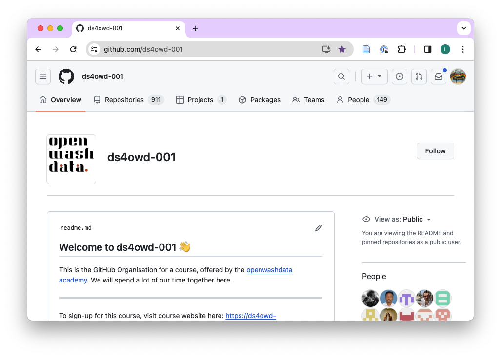
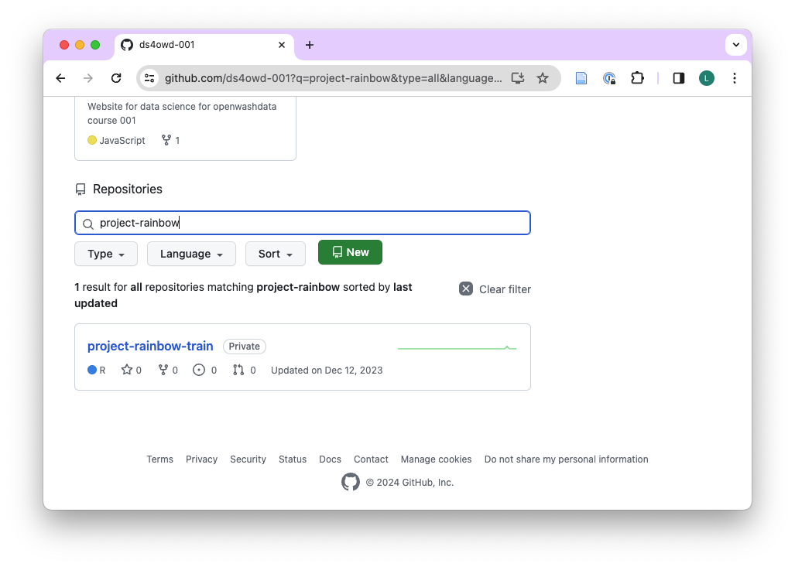
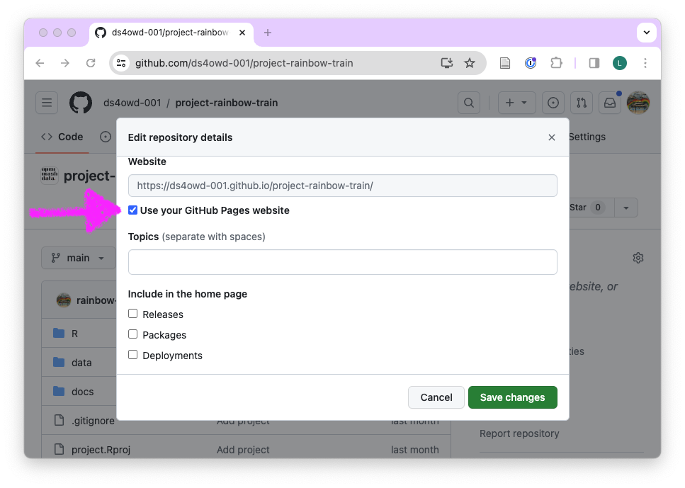

Guide
This guide documents features of R, RStudio, Posit Cloud, and Quarto, which are relevant throughout the course. These can settings that need to be made or tips that we communicate during the live sessions.
If you have a request, let us know and we will add guidance here.
1 Switch pipe operator
By default, R uses %>% as the pipe operator from the magrittr package. Since R 4.1.0, the pipe operator is also available as |> without loading any packages. The |> operator is recommended to be used instead of %>%.
To switch to the native pipe operator, follow these steps:
- Open your project on Posit Cloud
- On the menu bar of RStudio, click on
Tools>Global Options...(see Figure 1) - On the left panel, click on
Code - On the right panel, select the 4th check-box from the top next to ’Use native pipe operator, |> (requires R 4.1+) (see Figure 2)
- Click on
ApplyandOK

2 Zotero reference management
We recommend using Zotero as a tool for reference management, but do not teach how to use it in this course. The guidance below will support you in setting up Zotero.
2.1 Get Zotero account
- Open https://www.zotero.org/user/login/
- Click on Register for a free account
- Chose username, email, and password
- Click Register
- Open your email and verify your account
2.2 Install Zotero desktop client
- Open https://www.zotero.org/download/
- Download Zotero for your operating system
- Install Zotero
- Log in to your Zotero account by opening Settings -> Sync and typing the Username and Password you have previously set up
- Click on the green refresh button in the top-right corner of the Zotero window

2.3 Install the Zotero Connector for your browser
- Open https://www.zotero.org/download/
- Download the Zotero Connector for your browser
- Install the Zotero Connector
- Log in to your Zotero account
2.4 Setup Add-ons and the citation key format
- Go to https://retorque.re/zotero-better-bibtex/installation/
- Click on the latest release so you are redirected to github
- Find the .xpi file and right-click it. Click on Save Link As… and choose your location for saving the file.

- Open Zotero -> Tools -> Add-ons -> (Gear icon) -> Install Add-on From File… -> choose the .xpi file you have just saved

- Restart Zotero

Wait until the database fully loads. Only the first time is long; the next interactions with Zotero will be much faster.
You may need to restart Zotero the second time. Please do so if you see a prompt after Better BibTeX is installed.
Go to Zotero -> Settings -> Export -> Default Format and change the default format to Better BibTeX Quick Copy:
- In the same setting window, go to Better BibTeX -> Open Better BibTeX preferences…

- In the Citation keys tab, use the following Citation key formula for Better BibTeX:
[auth:lower][year][veryshorttitle1_0:lower]
The line above means that the citation key will be build from:
- First author’s last name in lowercase
- publication year
- The first word from the title in lowercase, not including the connectors such as “the” or “a”

- Go to Export -> Quick-Copy in the Better BibTeX preferences. Select Pandoc citation.

2.5 Change the setting for the citekey autopin delay
- Open Zotero advanced preferences (Zotero -> Settings -> Advanced)
- Open the Config Editor under the Advanced Configuration section

- Click I accept the risk!
- In the search bar, search for autopin

- Double-click into the field under Value
- In the new window called Enter integer value, change the existing 0 to 2

- Click OK
- Close all setting windows
3 Publish to GitHub Pages
3.1 Navigate to your repository
- Open github.com in your browser and navigate to the GitHub organisation for the course: https://github.com/ds4owd-001.

- Use the search field under “Repositories” to find your capstone project repository.

- Open your capstone project repository.

3.2 Make repo public
If your repository’s visibility is set to “private” (indicated by a small padlock next to the repositories name), you first need to switch it to “public” by following these steps:
- Click on “Settings”.

- Stay on “General” and scroll down to the bottom of the page “Danger Zone”.

- On the first sub-heading “Change repository visibility”, click “Change visibility”, then “Change to public”.

- Click “I want to make this repository public”.

- Click “I have read and understand these effects”.
- Click “Make this repository public”.
- Provide the requested credentials.
- Done.
3.3 Publish with GitHub Pages
- Open your capstone project repository, and click on “Settings”.
- In the left navigation pane, click on “Pages” under “Code and automation”.

- Under “Build and deployment”, then under Branch, click the dropdown titled “None”.

- In the dropdown, select “main”.

- Click on the dropdown titled “/ (root)”. In the dropdown, select “/docs”.

- Click “Save”.

3.4 Edit “About” of repository
- Open your capstone project repository.

- On right side, next to “About”, click on the gear icon.

- Under “Description” you can add “This project report was prepared for the data science for openwashdata course.” or anything else that you would like to highlight.

- Under “Website”, click “User your GitHub Pages website”.

Under “Include in the home page”, you can remove the checked boxes.
Click “Save changes”.
The public URL of your repository will now be shown under “About” on the right side.

- Open your published website and enjoy.